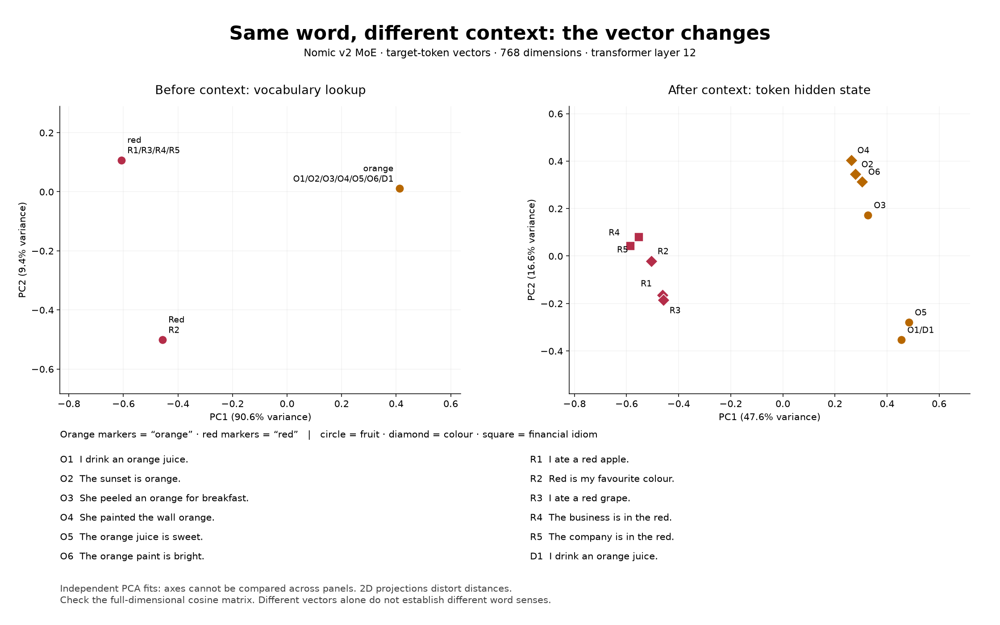

Embeddings, chunking and semantic search
An embedding turns a piece of text into a list of numbers so that texts with similar meaning land close together. Everything else in the course rests on that: we cut documents into chunks, embed each one, embed the question, and return the closest chunks.
- Model
- nomic-embed-text-v2-moe
- Dimensions
- 768
- Input limit
- 512 tokens, prefix included
- Pooling
- Masked mean, then L2 norm
- Runs on
- Your CPU · no API key
- Time
- 50 minutes
Text to vector what the encoder does
search_query:. The two prefixes put questions and passages into a shared space built for matching them.Five demos in teaching order
Sentences become vectors
Five sentences, one 768-number vector each, and their cosine similarity matrix. Ask students to predict which paraphrase lands closest to the original before you run it.
m01_nomic_embeddings.pyThe same word changes with context
"orange" in juice and in paint starts from the same vocabulary vector and ends up somewhere else after the transformer layers. This looks at single tokens, not pooled sentence vectors.
m02_contextual_words.pyWhere to cut a document
The same support text split three ways: every 300 characters, recursively at paragraph and line breaks, and by section. No model runs; watch where headings get separated from their instructions.
m03_chunking_comparison.pyChunks become vectors
Each chunk's character count, Nomic token count and vector shape, with 300-character chunks and an overlap of 50.
m04_nomic_chunking.pyA question finds passages
Embed the question, compare it with every chunk, print the closest. Top-k always returns something, even for a question the text can't answer.
m05_nomic_semantic_search.py
Same word, new context measured · layer 12
| Pair | Sentences | Before context | After context |
|---|---|---|---|
| O1 / O2 | I drink an orange juice · The sunset is orange | 1.000 | 0.667 |
| O2 / O4 | The sunset is orange · She painted the wall orange | 1.000 | 0.823 |
| R1 / R2 | I ate a red apple · Red is my favourite colour | 0.804 | 0.692 |
| R1 / R3 | I ate a red apple · I ate a red grape | 1.000 | 0.855 |
| R4 / R5 | The business is in the red · The company is in the red | 1.000 | 0.965 |
| O1 / D1 | The same sentence twice | 1.000 | 1.000 |

Chunking boundaries decide what can be found
| Strategy | Rule | Trade-off |
|---|---|---|
| Fixed | Cut every 300 characters | Predictable sizes; splits words and sentences |
| Recursive | Prefer paragraphs, then lines, then spaces, within 300 characters | Keeps more boundaries; can still separate a heading from its instructions |
| Sections | Keep each heading and its body together | Keeps meaning together; sections can exceed the size limit |
The PDF is split by its own clause numbers (§3.3, §7.4), capped at 512 tokens with no overlap. Each chunk also repeats its section heading, so a passage still says which section it belongs to after it is cut out. Characters and tokens are different units: these demos count characters, the model counts tokens.
Similarity what the number means
- Cosine similarity compares direction, from −1 to 1. The vectors here have length 1, so cosine, the dot product and Euclidean distance all rank results the same way.
- It is not a probability. 0.82 does not mean "82% relevant", and there is no universal cut-off.
- Top-k always returns k results. Ask a telecom collection for a cake recipe and it still hands back three passages. Deciding relevance is a later step (lesson 3's refusal, the Jev gate).
Across languages why English questions find Greek text
Nomic v2 is trained on many languages together, so a question and a passage that mean the same thing land close even in different languages. That is why the course can ask "When do Hearts expire?" of a Greek PDF.
Close is not the same as closest. In lab 5, "When do Hearts expire?" matched an English question about transferring Hearts (0.47) more closely than the Greek "Πότε λήγουν οι Καρδιές;", while two English questions about different plans scored 0.93. Cross-language matching works, but it is weaker than matching within one language.
Run it
# once, from the repository root (downloads about 2 GB of weights)
uv sync --all-extras
uv run --all-extras python -m modules.c01_embeddings.m02_contextual_words --allow-download
# the five demos, in order
uv run --all-extras python -m modules.c01_embeddings.m01_nomic_embeddings
uv run --all-extras python -m modules.c01_embeddings.m02_contextual_words
uv run --all-extras python -m modules.c01_embeddings.m03_chunking_comparison
uv run --all-extras python -m modules.c01_embeddings.m04_nomic_chunking
uv run --all-extras python -m modules.c01_embeddings.m05_nomic_semantic_search \
--query "There are two completed payments on my card" --top-k 2Pitfalls
- Same length, different space.Nomic v1.5 also returns 768 numbers, but its vectors can't be compared with v2's. Changing the model means re-embedding everything.
- Forgetting the prefixes.Without
search_document:andsearch_query:, similarities drop quietly; nothing errors. - Too long is an error, not a truncation.Input over 512 tokens is rejected so no text silently disappears. Split it first.
- The first run downloads.Demos 1, 4 and 5 fetch the weights if they are missing; demo 2 needs
--allow-download. Run them once before class.
Next: lesson 2, vector databases.